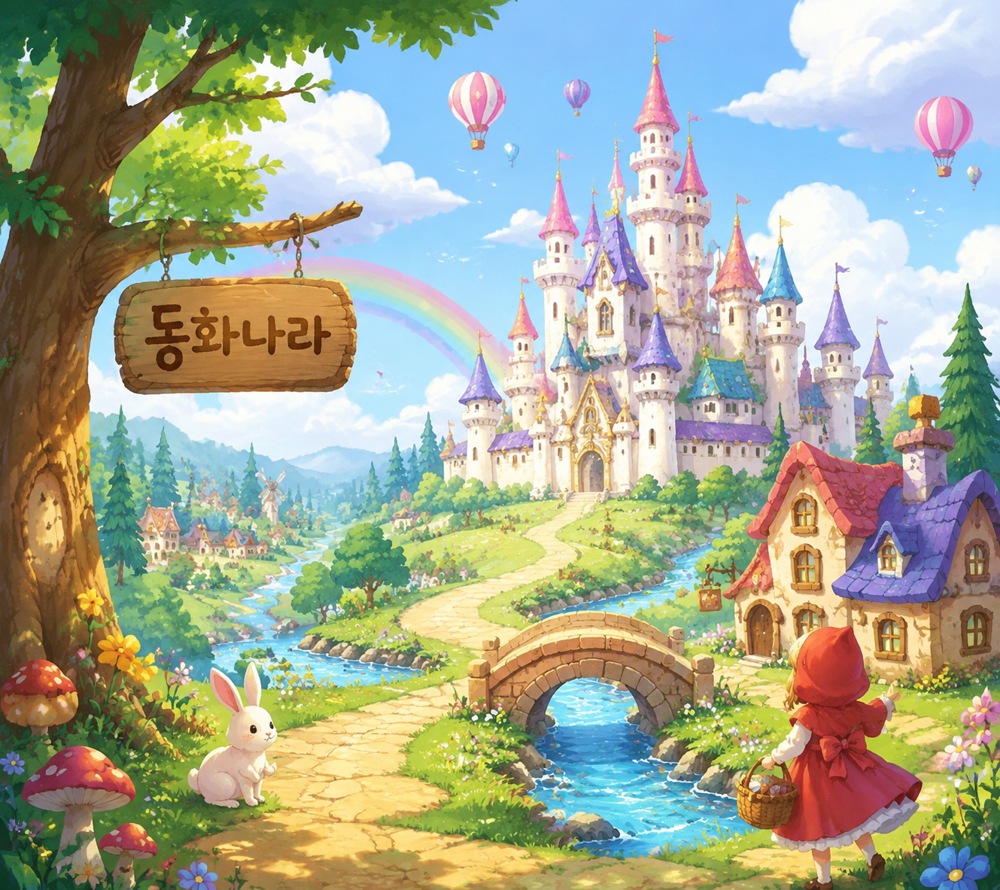

🛠 Tech Stack
- [FE]React
- [BE]Express.js OR Spring Boot
- [DB]MariaDB
- Cloudflare
- Docker
- Oracle Always Free
- GitHub Actions
🧠 어떻게 만들었나
원하는 동화의 주제나 스토리를 입력하면 AI가 자동으로 완성된 동화 콘텐츠를 생성해주는 플랫폼입니다. OpenAI GPT / Claude 등의 LLM으로 스토리라인을 작성하고, Image Generation API로 삽화를 생성하며, TTS(Text-to-Speech)를 활용해 음성 나레이션을 자동으로 생성합니다. 사용자는 원하는 동화의 주제만 입력하면 이야기, 삽화, 음성이 완벽하게 갖춰진 완성된 동화를 UI에서 바로 볼 수 있습니다.
💬 이 프로젝트 어떠세요?
GitHub 계정으로 로그인하면 댓글이 본인 리포의 GitHub Discussions에 자동 저장됩니다.